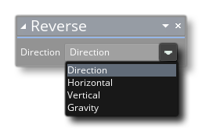

Cette action est utilisée pour inverser certaines valeurs liées à la direction et au mouvement. Les options disponibles sont:  La direction de renversement ajoutera simplement 180 ° à la direction actuelle (boucle autour de 360 ° si nécessaire, ainsi, inverser 270 ° vous donnerait 90 °), renversant la vitesse horizontale ou verticale multipliera simplement le vecteur de vitesse donné par -1 et choisir la gravité fera la même chose que choisir la direction, seulement pour la direction de la gravité.
Argument La description direction La direction à inverser
Le code de bloc d'action ci-dessus vérifie la collision de l'instance avec "obj_Wall" par rapport à la position actuelle à gauche et à droite. Si l'on en trouve un, la vitesse horizontale est inversée.